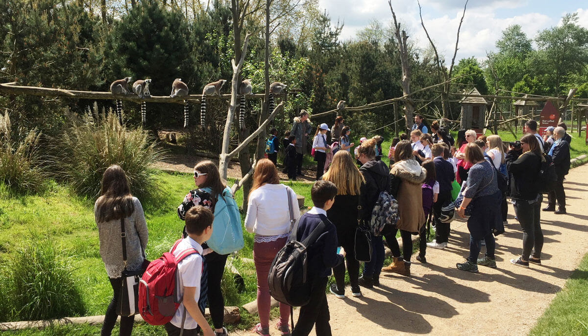
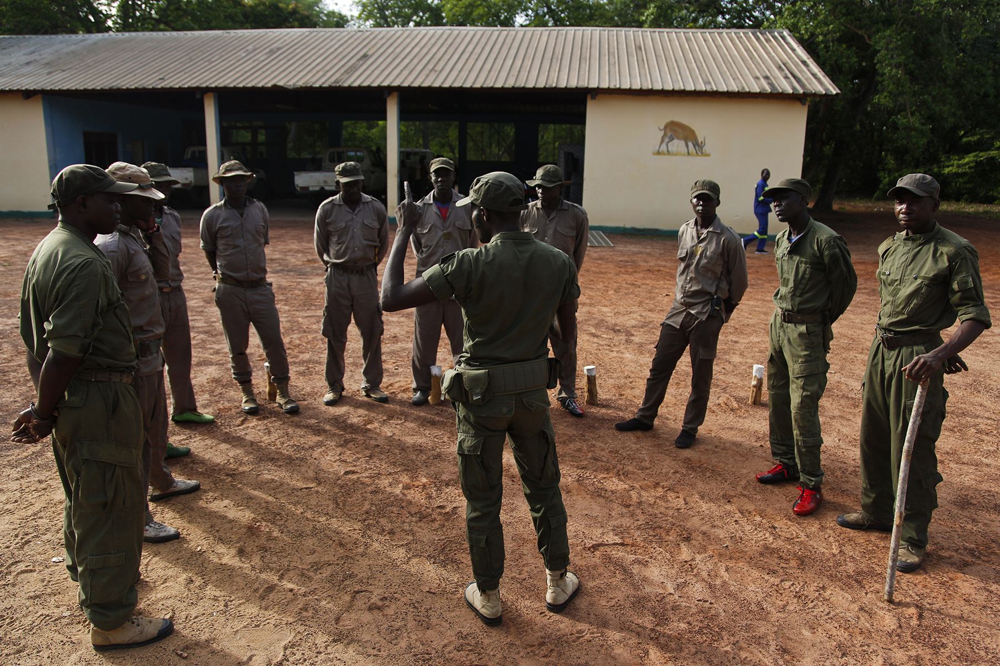

Our Projects For Tackling This
Zoo Conservation
Some of the investement we receive will go to projects with nationals zoos. These projects help in many ways, such as funding tests and research into the Amur leopard, in order to better understand the creature. Another is to help in increasing the poppulation of the Leopard. This is cruical in order to bring the creature out of near extincion
Governmental Pressure
One of the most important aspect is to keep pressure on the Government. This in part can be through media; shareing our stories through social media can help to increase pressure on local authoritied and in turn lead to the Governmental bodies taking the situation more seriour
Poaching Protection
Some of the investement we receive will go to the protection of Leopards in the conservation area. This area is protected from poachers, looking to skin and kill the Leopards. There is round the clock protection, with cctv and guards, helping to deter intruders. Inverstment will also go to the training of these guards
Research and Development

This is a key project to help the Leopards. Money will be going into helping develop cures for the Amur Leopards genetic defects. Any research that can help with the ailing genetic problems of the Amur Leopard will help us to increase their numbers, through diversifying the gene pool. This will also help long term goals as it will increse the likelyhood of the breed thriving in the wild.